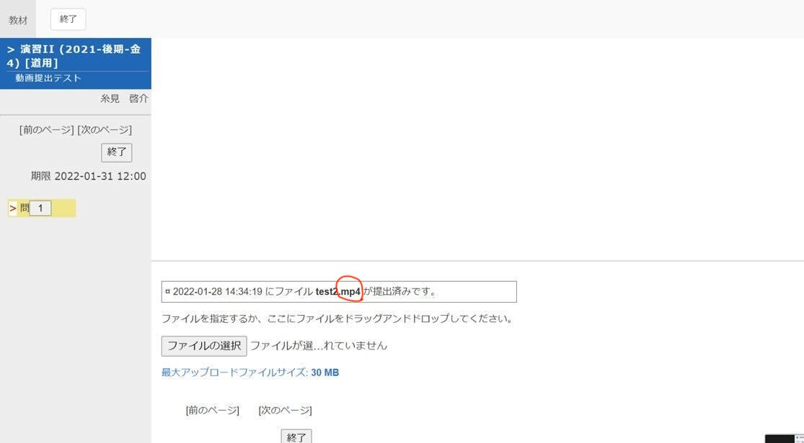
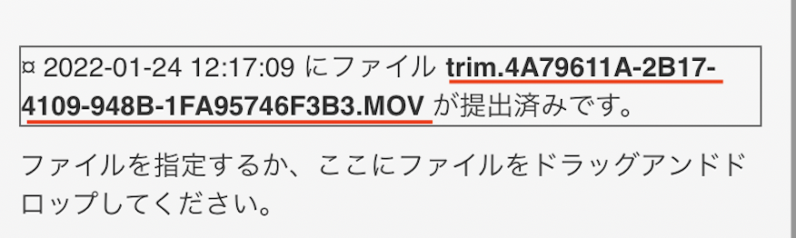

3枚程度のパワーポイントを作成して、ナレーションをつけて書き出した動画を提出してみましょう。
テーマはどんなことでも構いません。（例：ご当地自慢、好きな国について、企業分析、この授業を履修した理由などなんでもOK・・・）
今回の宿題は練習なので、レビューは行いません。よって、他の学生に見られることはないので、自由に作成してください。
提出の加点はされます
【注意】
毎回、webclassで課題提出後、必ず提出した課題の拡張子がmp4,mov,m4vのいずれかになっていることを確認しましょう！
拡張子とは(外部サイト)

ファイル名を日本語にした場合、webclassでみると下記のように文字化けしますが、拡張子が動画（mp4,mov,m4v）になっていれば大丈夫です。
